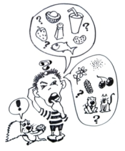

This page has usage examples for the following words:
allergic to 〜アレルギーがある
allergic constitution アレルギー体質 アレルギーたいしつ
allergic rhinitis, pollen allergy 花粉症 かふんしょう
antihistaminic agent(drug), antihistamines 抗ヒスタミン剤 こうヒスタミンざい
break out in a rash 発疹する ほっしんする
hives, urticaria 蕁麻疹 じんましん
itching かゆみ
skin disease 皮膚病 ひふびょう
side effect 副作用 ふくさよう
skin trouble 皮膚のトラブル ひふのトラブル

Recently, small red bumps broke out all over my face. Some food might not agree with me.
何か食べ物にあたったのか、赤いブツブツが顔中にできてしまいました。
なにかたべものにあたったのか、あかいブツブツが かおじゅうにできてしまいました。
What do you think caused the hives?
じんましんの原因は何か思い当たりますか？
じんましんのげんいんは なにか おもいあたりますか？
Well, now I remember. Yesterday I ate some unripe mango.
そう言えば、昨日、あまり熟れていないマンゴーを食べました。
そういえば、きのう、あまりうれていないマンゴーをたべました。
This is the first time I've eaten mango.
マンゴーを食べたのは初めてです。
マンゴーをたべたのは はじめてです。
Are you allergic to anything?
アレルギー体質ですか。何かのアレルギーがありますか。
アレルギーたいしつですか。なにかのアレルギーがありますか。
Have you broken out in a rash like this before?
今までにこのように発疹したことはありますか。
いままでに このように ほっしんしたことはありますか。
I have suffered from allergic rhinitis for several years.
ここ数年、花粉症で悩まされています。
ここすうねん、かふんしょうで なやまされています。
After I applied sun screen, I had an allergic reaction.
日焼け止めクリームをぬったらアレルギー反応を起こしてしまいました。
ひやけどめクリームをぬったらアレルギーはんのうをおこしてしまいました。
Some ingredients may not agree with me.
何かの成分が体質に合わなかったようです。
なにかのせいぶんが たいしつにあわなかったようです。
My face is itchy and swollen and red here and there.
顔にかゆみがあって、部分的に赤く腫れています。
かおにかゆみがあって、ぶぶんてきにあかくはれています。
I might have scratched the itchy parts.
かゆい所をかきむしったようです。
かゆいところをかきむしったようです。
My eyelids and ear lobes are red and wet.
まぶたと耳たぶが かぶれてジクジクしています。
まぶたとみみたぶが かぶれてジクジクしています。
Dose this drug have any strong side effects such as causing sleepiness?
この薬は、強い眠気などの副作用がありませんか。
このくすりは、つよいねむけなどのふくさようがありませんか。
A conversation between a patient and a doctor about skin trouble
Patient:
As a yearly custom, I spend time in Hawaii during Christmas and the New Year. While in Hawaii, I will take care not to catch a cold and avoid sunburn. Is there anything else I should know?
今年もクリスマスからお正月にかけてハワイで過ごします。滞在中は、軽い風邪や日焼けによる肌のトラブルくらいを注意すればと考えていますが・・・
Doctor:
As both sunscreen and suntan lotion contain chemical components, a skin test prior to applying, at least 24 hours, is recommended if your skin is sensitive (the easiest method is to apply small amount inside the elbow). When you are unaccustomed to the climate and environment, your body works very hard to get adjusted. Take time to get accustomed. When you experience skin trouble or hives after applying sunscreen or suntan lotion, it is best not to try any medicine on your own but to go to hospital.
日焼け止めクリーム、或いは、サンタンクリームも化学成分が含まれていますから、皮膚の敏感な人は可能ならば２４時間前に皮膚テストをされるとより安全です。（肘の内側などに少量塗布してみる。）違った環境風土に会うと身体も一生懸命に順応しようとしますから少しずつ慣れるようにしたいものです。じんましんが出た時は、自己判断であれこれ薬を塗ったり、飲んだりされるより、やはり病院に行く事が最良の方法です。
My two cents 一言おせっかい
Who despises the day of small things? (Zecharish 4:10)
大したことはなかろうと見くびっていると大事になることもありますね。
[hi03]
| © 1995-2013 NACOS International Institute. All Rights Reserved. |